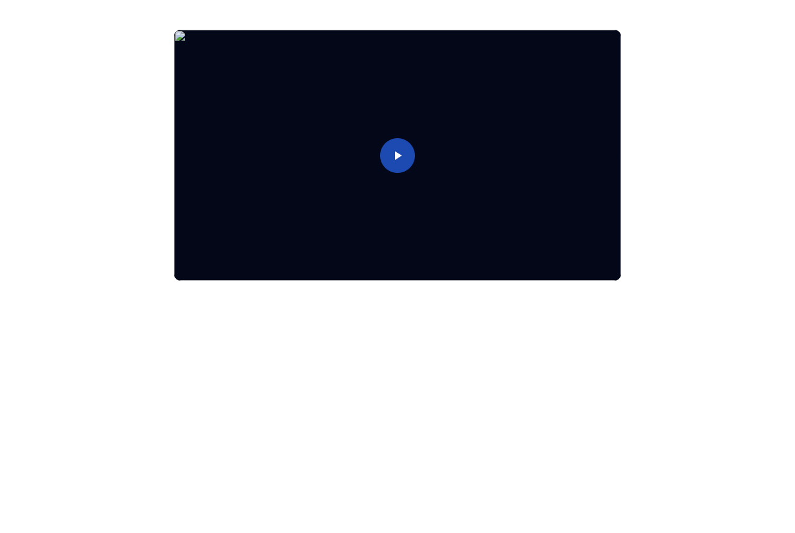
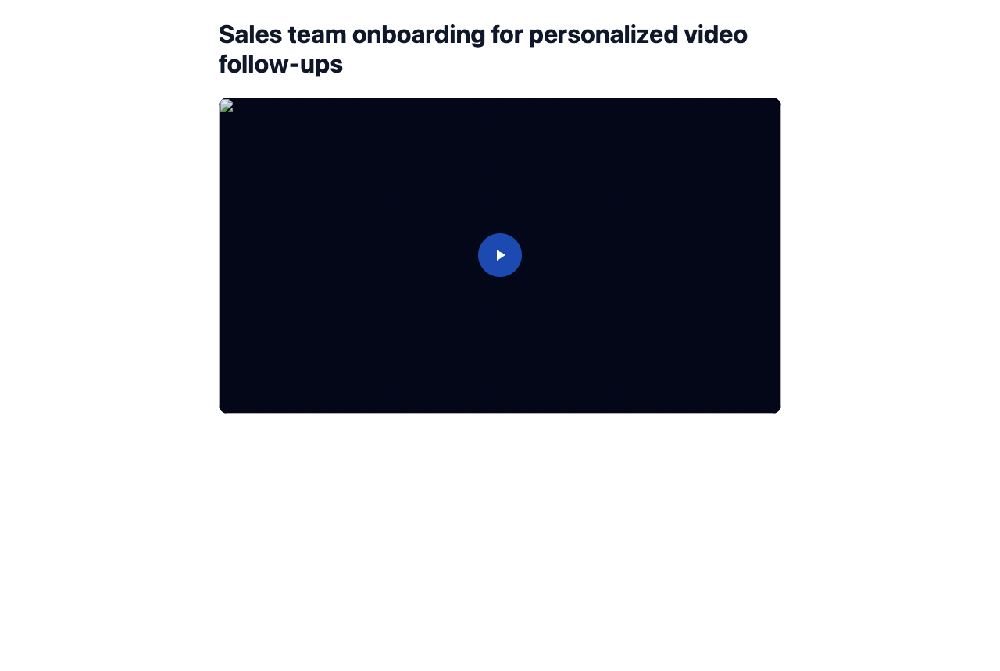
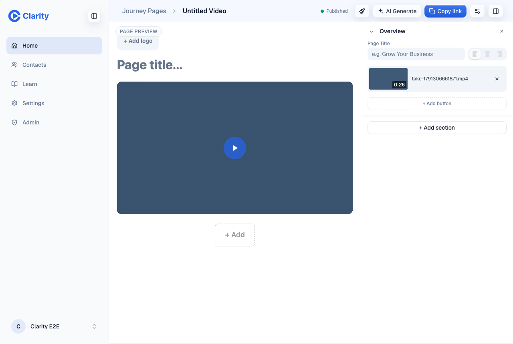
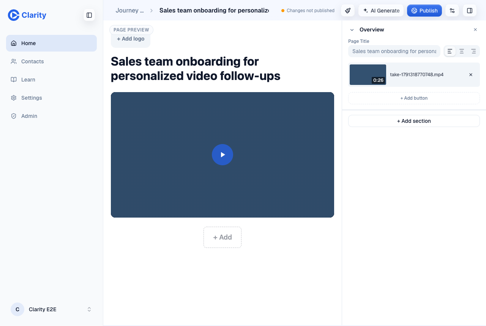
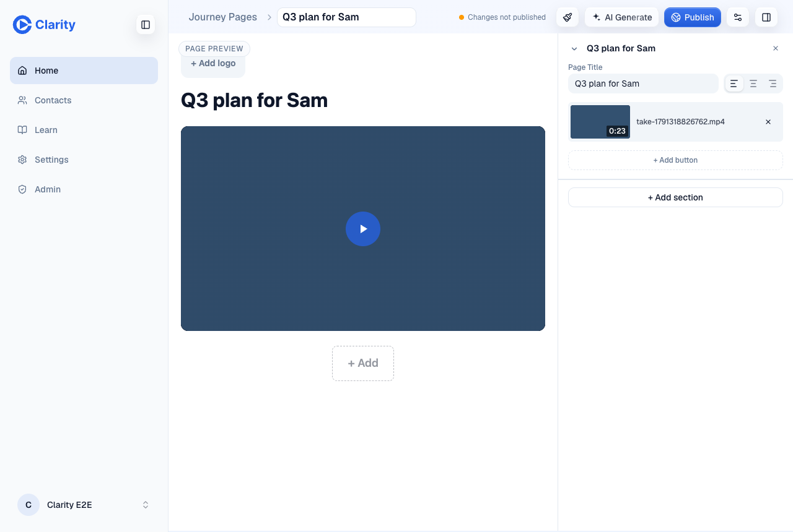
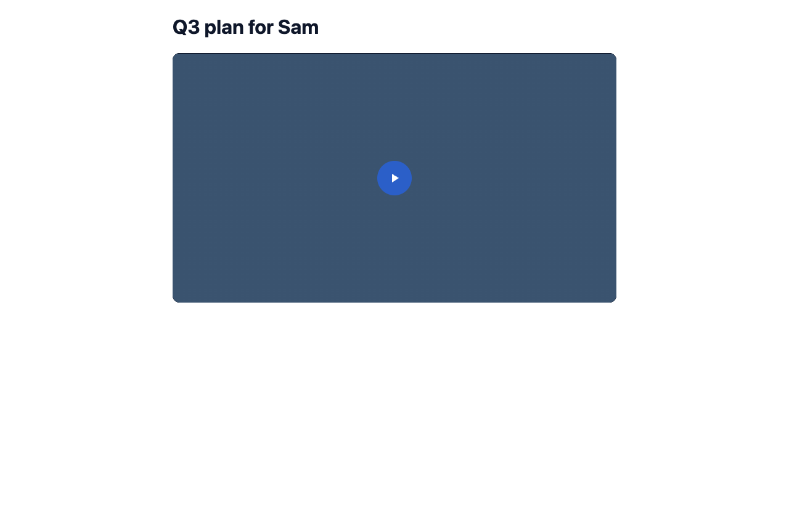
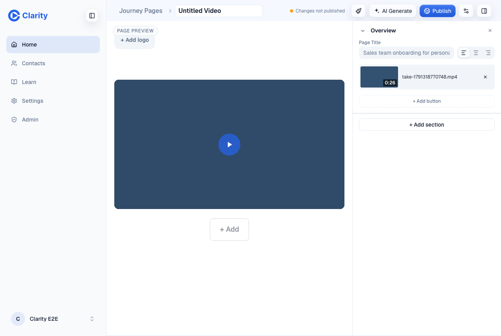
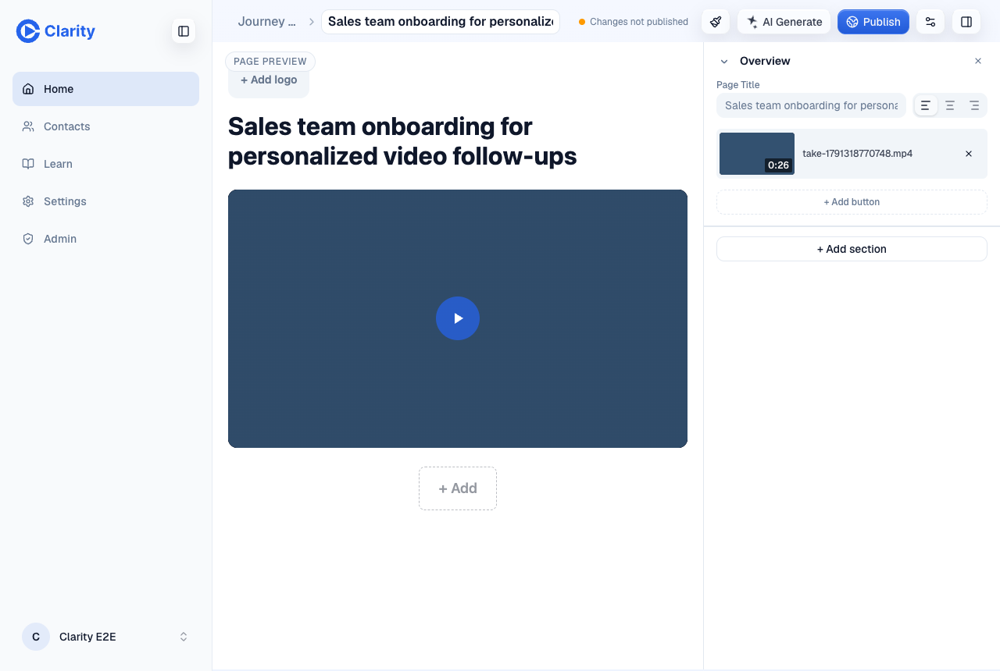
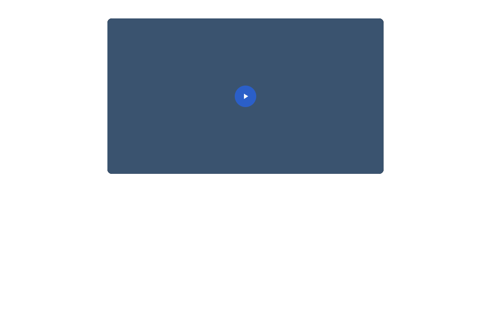

Auto-title on the jobs table
PR #1037 on its preview, with real calls to the model. The first sections are from commit 5e5ce702e. The editor and stale-save sections are from b53e0e24b. The takes are synthetic speech made for this test.
A fresh recording, after the rep saved it in the editor
Before: the take is "Untitled Video" and its share page has no headline. The rep opened the page in the editor and saved it before any title existed, which writes revision 2 with an empty hero title. After: the same link shows the title the model gave the video. The page follows the video because its hero title is still empty.


The editor shows the title the live page shows
On a page made from a video, an empty hero title now shows the video's title in the editor, styled like any title. The Page Title field keeps an empty value and shows the title as its placeholder. The top bar shows it too, since the page's stored name is still "Untitled Video". None of it is stored. After five editor saves the page still has an empty hero title and the name "Untitled Video", and the live page still follows the video.


Typing a title stores it, and clearing it goes back to the video's




A stale save no longer undoes the title
The video details form that sent a title with every save was removed in June, and its save code was still in the editor unused. That code is deleted. The legacy route it called, PATCH /api/media/videos, no longer writes titles. Replaying the old form's request after the automatic title landed, with the title "Untitled Video" and a new description, kept the automatic title and its auto source, and saved the description.
A rename wins, and non-English speech gets no title

Every take in the run
| Take | Name after the run | Job outcome | Finish to done |
|---|---|---|---|
| English recording, saved early in the editor | Sales team onboarding for personalized video follow-ups | titled | 121 s (ticks about a minute apart) |
| English recording, ticks 6 to 16 s apart | Sales team onboarding for personalized video follow-ups | titled | 38 s |
Upload IMG_4821.mp4 | Pricing plans overview | titled | 77 s |
| English recording renamed right after finish | Pricing for Sam | not_eligible | 44 s |
Upload Q3 pricing walkthrough.mp4 | Q3 pricing walkthrough | no job: a human-named file is the person's title | |
| Swedish recording | Untitled Video | not_english, no model call | 18 s |
German upload IMG_6001.MOV | IMG_6001 | not_english, no model call | 77 s |
| Silent recording | Untitled Video | no_speech, no model call | 79 s |
An independent check on its own takes measured 35 s from finish to title with frequent ticks. Most of that is the runner's 30 s wait after it first finds the captions not ready. Production runs the job from the minute cron, so expect roughly one to two minutes from finish to title. That is an estimate from the code, not a measurement.
What the captions look like for other languages
Mux makes English captions only. Swedish came back as English-shaped text full of invented names. German and French came back as one English line repeated ("I'll see you guys in the next video"). Spanish stayed Spanish. The screen checks three things, measured on these real captions: the share of common English words, the share of mid-sentence capitalised words, and how much the text repeats itself. Each non-English take fails exactly one of the three.